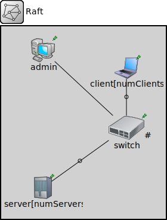

Package: raft
Raft
network(no description)
Usage diagram
The following diagram shows usage relationships between types. Unresolved types are missing from the diagram.
Parameters
| Name | Type | Default value | Description |
|---|---|---|---|
| numServers | int | 3 | |
| numClients | int | 2 |
Properties
| Name | Value | Description |
|---|---|---|
| isNetwork |
Unassigned submodule parameters
| Name | Type | Default value | Description |
|---|---|---|---|
| admin.numberOfNewServers | int | 2 | |
| admin.numberOfserversToRemove | int | 1 | |
| admin.resendTimer | double | 1s | |
| admin.changeConfigTime | double | 5s | |
| client.lowCommandTimeout | double | 2s | |
| client.highCommandTimeout | double | 3s | |
| client.requestTimeout | double | 0.5s | |
| client.clientErrorRateThreshold | double | 1.0 | |
| switch.delay | double | ||
| server.maxLogSizeBeforeSnapshot | int | 20 | |
| server.errorRateThreshold | double | 1.0 | |
| server.instantieatedAtRunTime | bool | false | |
| server.hearthBeatTime | double | ||
| server.lowElectionTimeout | double | ||
| server.highElectionTimeout | double | ||
| server.resendTimeout | double | ||
| server.lowCrashTimeout | double | ||
| server.highCrashTimeout | double | ||
| server.reviveTimeout | double |
Source code
network Raft { parameters: int numServers @prompt("Number of servers") = default(3); int numClients @prompt("Number of clients") = default(2); submodules: admin: Admin { parameters: @display("p=70,40"); } client[numClients]: Client { parameters: @display("p=210,70,m,10,200"); } switch: Switch { parameters: @display("p=210,170"); gates: port[numServers+numClients+1]; // 1 extra port for the admin } server[numServers]: Server { parameters: @display("p=70,270,m,10,320"); } connections: admin.port <--> switch.port[0]; for i=0..numClients-1 { client[i].port <--> { delay = 10ms; } <--> switch.port[i+1]; } for i=0..numServers-1 { server[i].port <--> { delay = 1ms; } <--> switch.port[numClients+1+i]; } }File: Raft.ned
 This documentation is released under the Creative Commons license
This documentation is released under the Creative Commons license